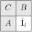

PNG is based on DPCM (filtering in the PNG nomenclature) and the DEFLATE,
which is a text compressor based on (Huffman coding and LZ77) [1]. All these “text”
compressors are completely reversible.
Figure 1: Architecture of the PNG codec. \(\mathbf I\) represents the RGB image,and \(\mathbf E\) the
prediction error resulting of the predictive coding. As it can be seen, DEFLATE
does not modify \(\mathbf E\), but only finds a more compact representation of the same
information.
Notice that DEFLATE is applied indepently to each channel. For example, in
the case of a RGBA image, four independent DEFLATE code-streams are
generated.
Pixels are translated to prediction residues (errors): \begin {equation*} {\mathbf E} = {\mathbf I} - \hat {\mathbf I} \end {equation*}
where \(\hat {\mathbf I}\) is an image prediction.
The entropy of the residue image is typically smaller than in the original image,
and the residues follow a Lapace probability distribution, centered in 0 (the
average of the prediction error is 0).
Available predictors (“filters”):

Type
Predictor
Prediction
0
None
\(\hat {\mathbf I}_i\leftarrow 0\)
1
Sub
\(\hat {\mathbf I}_i\leftarrow A\)
2
Up
\(\hat {\mathbf I}_i\leftarrow B\)
3
Average
\(\hat {\mathbf I}_i\leftarrow (A+B)/2\)
4
Paeth
\(\hat {\mathbf I}_i\leftarrow A + B - C\)
To increase the compression ratio (considering that the best predictor can
depend on the area of the image that is being compressed), the predictor can be
changed (and pbviously this is signaled) in the “middle” of the encoding of an
image.
LZ77 removes the statistical redundancy of high order (remember that the
preditor has removed the spatial redundancy).
The Huffman encoder removes the statistical redundancy of order 0. The
probabilistic model used is adaptive and initially empty.
The amount of redundancy removed depends on several factors (such as
the configuration of the DEFLATE parameters and the information stored
in the image) resulting in an unpredictable output bit-rate.
6 Entropy and lossless compression
To estimate the redundancy we have basically two options:
Compute the 0-order (memoryless source) entropy of the signal: the higher
the entropy, the lower the redudancy. In fact, if we suppose that the
samples of the signal are uncorrelated, the 0-order entropy is an exact
measure of the expected bit-rate achieved by an arithmetic encoder (the
most efficient entropy compressor). Unfortunately, the 0-order entropy is
usually only a estimation of the redundancy, i.e., lower bit-rates can be
achieved in practice after using a high-order decorrelation.
A better way is to use an lossless compressor: the higher the length of the
compressed file compared to the length of the original file, the lower the
redundancy.3
Notice, however, that although this estimation is more accurate than
the 0-order entropy, in general, it depends on the compressor (different
algoritms can provide different estimations).
3If the length of the compressed file is equal or larger than the length of the original
file, then, for the compressor that we are using, there is not redundancy in the original
representation.